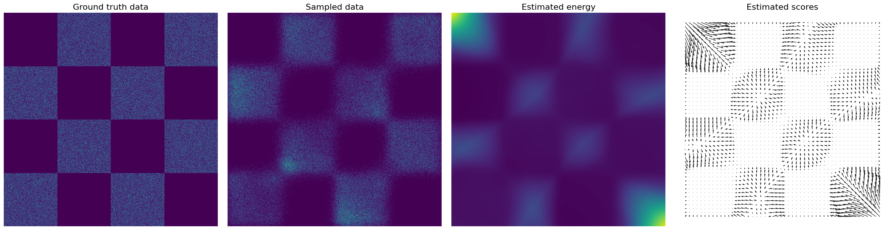

This module is based on the work: How to Train Your Energy-Based Models by Yang Sond and Diederik P. Kingma (2021).

Table of Contents
The density given by an EBM is:
p θ ( x ) = exp ( − E θ ( x ) ) Z θ , \begin{array}{rcl} p_{\theta}(x) = \frac{\exp(-E_\theta(x))}{Z_\theta}, \end{array} p θ ( x ) = Z θ e x p ( − E θ ( x ) ) , where E θ : R d → R E_\theta:\mathbb{R}^d \to \mathbb{R} E θ : R d → R Z θ = ∫ exp ( − E θ ( x ) ) d x Z_\theta=\int \exp(-E_\theta(x)) dx Z θ = ∫ exp ( − E θ ( x ) ) d x
Given samples x 1 , … , x N x_1,\dots, x_N x 1 , … , x N R d \mathbb{R}^d R d θ \theta θ max θ ∑ i = 1 N log p θ ( x i ) \max_\theta \sum_{i=1}^N \log p_{\theta}(x_i) max θ ∑ i = 1 N log p θ ( x i ) Z θ Z_\theta Z θ θ \theta θ log p θ ( x ) \log p_{\theta}(x) log p θ ( x ) θ \theta θ
We can estimate the gradient of the log-likelihood with MCMC approaches:
∇ θ log p θ ( x ) = − ∇ θ E θ ( x ) − ∇ θ log Z θ . \begin{array}{rcl} \nabla_\theta \log p_\theta(x) = -\nabla_\theta E_\theta(x)-\nabla_\theta \log Z_\theta. \end{array} ∇ θ log p θ ( x ) = − ∇ θ E θ ( x ) − ∇ θ log Z θ . The first term is simple to compute (with automatic differentiation).
Maths: computing ∇ θ log Z θ \nabla_\theta \log Z_\theta ∇ θ log Z θ We have:
∇ θ log Z θ = E p θ ( x ) [ − ∇ θ E θ ( x ) ] ( = ∫ p θ ( x ) [ − ∇ θ E θ ( x ) ] d x ) . \begin{array}{rcl} \nabla_\theta \log Z_\theta = \mathbb{E}_{p_{\theta}(x)}\left[-\nabla_\theta E_\theta(x)\right] \left(= \int p_{\theta}(x) \left[-\nabla_\theta E_\theta(x)\right] dx \right). \end{array} ∇ θ log Z θ = E p θ ( x ) [ − ∇ θ E θ ( x ) ] ( = ∫ p θ ( x ) [ − ∇ θ E θ ( x ) ] d x ) . Proof:
∇ θ log Z θ = ∇ θ Z θ Z θ = 1 Z θ ∫ ∇ θ exp ( − E θ ( x ) ) d x = − 1 Z θ ∫ ∇ θ E θ ( x ) exp ( − E θ ( x ) ) d x = E p θ ( x ) [ − ∇ θ E θ ( x ) ] \begin{array}{rcl} \nabla_\theta \log Z_\theta &=& \frac{\nabla_\theta Z_\theta}{Z_\theta}\\ &=& \frac{1}{Z_\theta} \int \nabla_\theta \exp (-E_\theta(x))dx\\ &=& \frac{-1}{Z_\theta} \int \nabla_\theta E_\theta(x) \exp (-E_\theta(x))dx\\ &=& \mathbb{E}_{p_{\theta}(x)}\left[-\nabla_\theta E_\theta(x)\right] \end{array} ∇ θ log Z θ = = = = Z θ ∇ θ Z θ Z θ 1 ∫ ∇ θ exp ( − E θ ( x ) ) d x Z θ − 1 ∫ ∇ θ E θ ( x ) exp ( − E θ ( x ) ) d x E p θ ( x ) [ − ∇ θ E θ ( x ) ] Thus, we can obtain an unbiased one-sample Monte Carlo estimate of the log-likelihood gradient by
∇ θ log Z θ ≈ − ∇ θ E θ ( x ~ ) , \begin{array}{rcl} \nabla_\theta \log Z_\theta \approx -\nabla_\theta E_\theta(\tilde{x}), \end{array} ∇ θ log Z θ ≈ − ∇ θ E θ ( x ~ ) , with x ~ ∼ p θ ( x ) \tilde{x}\sim p_\theta(x) x ~ ∼ p θ ( x ) x x x
∇ x log p θ ( x ) = − ∇ x E θ ( x ) since ∇ x log Z θ = 0. \begin{array}{rcl} \nabla_x \log p_\theta(x) = -\nabla_x E_\theta(x) \text{ since } \nabla_x \log Z_\theta = 0. \end{array} ∇ x log p θ ( x ) = − ∇ x E θ ( x ) since ∇ x log Z θ = 0 . Hence, in this case, Langevin MCMC is given by:
x t = x t − 1 − ϵ ∇ x E θ ( x t − 1 ) + 2 ϵ z t , \begin{array}{rcl} x_t = x_{t-1} - \epsilon \nabla_x E_\theta(x_{t-1}) +\sqrt{2\epsilon}z_t, \end{array} x t = x t − 1 − ϵ ∇ x E θ ( x t − 1 ) + 2 ϵ z t , where z t ∼ N ( 0 , I ) z_t\sim \mathcal{N}(0,I) z t ∼ N ( 0 , I ) ϵ → 0 \epsilon\to 0 ϵ → 0 t → ∞ t\to \infty t → ∞ x t x_t x t p θ ( x ) p_\theta(x) p θ ( x )
In this homework, we will consider an alternative learning procedure.
The score (which was used in Langevin MCMC above) is defined as
s θ ( x ) = ∇ x log p θ ( x ) = − ∇ x E θ ( x ) = − ( ∂ E θ ( x ) ∂ x 1 , … , ∂ E θ ( x ) ∂ x d ) . s_\theta(x) = \nabla_x\log p_\theta(x) = -\nabla_x E_\theta(x) = -\left( \frac{\partial E_\theta(x)}{\partial x_1},\dots, \frac{\partial E_\theta(x)}{\partial x_d}\right). s θ ( x ) = ∇ x log p θ ( x ) = − ∇ x E θ ( x ) = − ( ∂ x 1 ∂ E θ ( x ) , … , ∂ x d ∂ E θ ( x ) ) . If p ( x ) p(x) p ( x )
E p ( x ) ∥ ∇ x log p ( x ) − s θ ( x ) ∥ 2 . \mathbb{E}_{p(x)} \|\nabla_x \log p(x) - s_\theta(x)\|^2. E p ( x ) ∥ ∇ x log p ( x ) − s θ ( x ) ∥ 2 . The problem with this objective is that we cannot compute ∇ x log p ( x ) \nabla_x \log p(x) ∇ x log p ( x ) p ( x ) p(x) p ( x ) p ( x ) p(x) p ( x )
E p ( x ) ∥ ∇ x log p ( x ) − s θ ( x ) ∥ 2 = c + E p ( x ) [ ∑ i = 1 d ( ∂ E θ ( x ) ∂ x i ) 2 + 2 ∂ 2 E θ ( x ) ∂ x i 2 ] , \mathbb{E}_{p(x)} \|\nabla_x \log p(x) - s_\theta(x)\|^2 = c + \mathbb{E}_{p(x)}\left[ \sum_{i=1}^d\left ( \frac{\partial E_\theta(x)}{\partial x_i}\right)^2+2\frac{\partial^2 E_\theta(x)}{\partial x^2_i}\right], E p ( x ) ∥ ∇ x log p ( x ) − s θ ( x ) ∥ 2 = c + E p ( x ) [ i = 1 ∑ d ( ∂ x i ∂ E θ ( x ) ) 2 + 2 ∂ x i 2 ∂ 2 E θ ( x ) ] , where c c c θ \theta θ
Proof:
E p ( x ) ∥ ∇ x log p ( x ) − s θ ( x ) ∥ 2 = E p ( x ) ∥ ∇ x log p ( x ) ∥ 2 + E p ( x ) ∥ s θ ( x ) ∥ 2 − 2 E p ( x ) ⟨ ∇ x log p ( x ) , s θ ( x ) ⟩ = c + E p ( x ) [ ∑ i = 1 d ( ∂ E θ ( x ) ∂ x i ) 2 ] − 2 ∫ p ( x ) ⟨ ∇ x p ( x ) p ( x ) , s θ ( x ) ⟩ d x = c + E p ( x ) [ ∑ i = 1 d ( ∂ E θ ( x ) ∂ x i ) 2 ] + 2 ∫ p ( x ) ∇ x ⋅ s θ ( x ) d x , \begin{array}{rcl} \mathbb{E}_{p(x)} \|\nabla_x \log p(x) - s_\theta(x)\|^2 &=&\mathbb{E}_{p(x)} \|\nabla_x \log p(x) \|^2 +\mathbb{E}_{p(x)} \| s_\theta(x)\|^2 - 2 \mathbb{E}_{p(x)} \langle \nabla_x \log p(x) , s_\theta(x)\rangle\\ &=& c + \mathbb{E}_{p(x)}\left[ \sum_{i=1}^d\left ( \frac{\partial E_\theta(x)}{\partial x_i}\right)^2\right] - 2 \int p(x) \langle \frac{\nabla_x p(x)}{p(x)} , s_\theta(x)\rangle dx\\ &=& c + \mathbb{E}_{p(x)}\left[ \sum_{i=1}^d\left ( \frac{\partial E_\theta(x)}{\partial x_i}\right)^2\right] + 2\int p(x) \nabla_x \cdot s_\theta(x) dx, \end{array} E p ( x ) ∥ ∇ x log p ( x ) − s θ ( x ) ∥ 2 = = = E p ( x ) ∥ ∇ x log p ( x ) ∥ 2 + E p ( x ) ∥ s θ ( x ) ∥ 2 − 2 E p ( x ) ⟨ ∇ x log p ( x ) , s θ ( x ) ⟩ c + E p ( x ) [ ∑ i = 1 d ( ∂ x i ∂ E θ ( x ) ) 2 ] − 2 ∫ p ( x ) ⟨ p ( x ) ∇ x p ( x ) , s θ ( x ) ⟩ d x c + E p ( x ) [ ∑ i = 1 d ( ∂ x i ∂ E θ ( x ) ) 2 ] + 2 ∫ p ( x ) ∇ x ⋅ s θ ( x ) d x , by integration by parts where for a vector valued function v ( x 1 , x 2 , x 3 ) v(x_1,x_2,x_3) v ( x 1 , x 2 , x 3 ) ∇ x ⋅ v = ∂ v 1 ∂ x 1 + ∂ v 2 ∂ x 2 + ∂ v 3 ∂ x 3 \nabla_x \cdot v = \frac{\partial v_1}{\partial x_1} + \frac{\partial v_2}{\partial x_2}+ \frac{\partial v_3}{\partial x_3} ∇ x ⋅ v = ∂ x 1 ∂ v 1 + ∂ x 2 ∂ v 2 + ∂ x 3 ∂ v 3
There are several drawbacks about the score matching approach: computing the trace of the Hessian is expensive and scores will not be accurately estimated in low-density regions, see Generative Modeling by Estimating Gradients of the Data Distribution
Denoising score matching is an elegant and scalable solution. Consider the random variable Y = X + σ Z Y = X+\sigma Z Y = X + σ Z X ∼ p ( x ) X\sim p(x) X ∼ p ( x ) Z ∼ N ( 0 , I ) Z\sim\mathcal{N}(0,I) Z ∼ N ( 0 , I ) p σ ( y ) p^\sigma(y) p σ ( y ) Y Y Y
∇ y log p σ ( y ) = − 1 σ E [ Z ∣ Y = y ] = − 1 σ E [ Z ∣ X + σ Z = y ] . \nabla_y\log p^\sigma(y) = -\frac{1}{\sigma}\mathbb{E}\left[ Z |Y=y\right] = -\frac{1}{\sigma}\mathbb{E}\left[ Z |X+\sigma Z=y\right]. ∇ y log p σ ( y ) = − σ 1 E [ Z ∣ Y = y ] = − σ 1 E [ Z ∣ X + σ Z = y ] . Proof:
∇ y log p σ ( y ) = ∇ y p σ ( y ) p σ ( y ) \begin{array}{rcl} \nabla_y\log p^\sigma(y) = \frac{\nabla_y p^\sigma(y)}{p^\sigma(y)} \end{array} ∇ y log p σ ( y ) = p σ ( y ) ∇ y p σ ( y ) We denote by φ \varphi φ N ( 0 , σ 2 I ) \mathcal{N}(0,\sigma^2 I) N ( 0 , σ 2 I ) p σ ( y ) = ∫ p ( x ) φ ( y − x ) d x p^\sigma(y) = \int p(x) \varphi(y-x) dx p σ ( y ) = ∫ p ( x ) φ ( y − x ) d x ∇ z φ ( z ) = − z σ 2 φ ( z ) \nabla_z \varphi(z) = -\frac{z}{\sigma^2} \varphi(z) ∇ z φ ( z ) = − σ 2 z φ ( z )
∇ y p σ ( y ) = ∫ p ( x ) ∇ y φ ( y − x ) d x = ∫ p ( x ) − ( y − x ) σ 2 φ ( y − x ) d x = − 1 σ E [ Y − X σ ∣ Y = y ] = − 1 σ E [ Z ∣ Y = y ] \begin{array}{rcl} \nabla_y p^\sigma(y) &=& \int p(x) \nabla_y \varphi(y-x) dx\\ &=& \int p(x) \frac{-(y-x)}{\sigma^2} \varphi(y-x) dx \\ &=& -\frac{1}{\sigma}\mathbb{E}\left[ \frac{Y-X}{\sigma} |Y=y\right]\\ &=& -\frac{1}{\sigma}\mathbb{E}\left[ Z |Y=y\right] \end{array} ∇ y p σ ( y ) = = = = ∫ p ( x ) ∇ y φ ( y − x ) d x ∫ p ( x ) σ 2 − ( y − x ) φ ( y − x ) d x − σ 1 E [ σ Y − X ∣ Y = y ] − σ 1 E [ Z ∣ Y = y ] The denoising score matching objective is now
E p σ ( y ) ∥ ∇ y log p σ ( y ) − s θ ( y ) ∥ 2 , \mathbb{E}_{p^\sigma(y)}\|\nabla_y \log p^\sigma(y) - s_\theta(y)\|^2, E p σ ( y ) ∥ ∇ y log p σ ( y ) − s θ ( y ) ∥ 2 , that we will minimize thanks to a gradient descent in the parameter θ \theta θ
In practice, we use the following relation:
E p σ ( y ) ∥ ∇ y log p σ ( y ) − s θ ( y ) ∥ 2 = E ∥ Z σ + s θ ( X + σ Z ) ∥ 2 − C \mathbb{E}_{p^\sigma(y)}\|\nabla_y \log p^\sigma(y) - s_\theta(y)\|^2 = \mathbb{E}\left\| \frac{Z}{\sigma}+s_\theta(X+\sigma Z)\right\|^2-C E p σ ( y ) ∥ ∇ y log p σ ( y ) − s θ ( y ) ∥ 2 = E ∥ ∥ ∥ ∥ ∥ σ Z + s θ ( X + σ Z ) ∥ ∥ ∥ ∥ ∥ 2 − C where C C C θ \theta θ
Proof: We have
E p σ ( y ) ∥ ∇ y log p σ ( y ) − s θ ( y ) ∥ 2 = E [ ∥ E [ Z σ ∣ Y ] + s θ ( Y ) ∥ 2 ] = E [ ∥ E [ Z σ ∣ Y ] ∥ 2 + ∥ s θ ( Y ) ∥ 2 + 2 ⟨ E [ Z σ ∣ Y ] , s θ ( Y ) ⟩ ] = E [ ∥ E [ Z σ ∣ Y ] ∥ 2 ] + E [ E [ ∥ s θ ( Y ) ∥ 2 + 2 ⟨ Z σ , s θ ( Y ) ⟩ ∣ Y ] ] = E [ ∥ E [ Z σ ∣ Y ] ∥ 2 ] + E [ ∥ s θ ( Y ) ∥ 2 + 2 ⟨ Z σ , s θ ( Y ) ⟩ ] = E [ ∥ E [ Z σ ∣ Y ] ∥ 2 ] + E [ ∥ s θ ( Y ) + Z σ ∥ 2 ] − E [ ∥ Z σ ∥ 2 ] = E ∥ Z σ + s θ ( X + σ Z ) ∥ 2 − E [ ∥ Z σ ∥ 2 − ∥ E [ Z σ ∣ Y ] ∥ 2 ] . \begin{array}{rcl} \mathbb{E}_{p^\sigma(y)}\|\nabla_y \log p^\sigma(y) - s_\theta(y)\|^2 &=& \mathbb{E} \left[\left\| \mathbb{E} \left[\frac{Z}{\sigma} | Y\right] +s_\theta(Y)\right\|^2\right]\\ &=& \mathbb{E} \left[\left\| \mathbb{E} \left[\frac{Z}{\sigma} | Y\right]\right\|^2 + \left\|s_\theta(Y)\right\|^2 + 2 \left\langle \mathbb{E} \left[\frac{Z}{\sigma} | Y\right], s_\theta(Y)\right\rangle \right]\\ &=& \mathbb{E} \left[\left\| \mathbb{E} \left[\frac{Z}{\sigma} | Y\right]\right\|^2 \right] + \mathbb{E} \left[ \mathbb{E} \left[ \left\|s_\theta(Y)\right\|^2 + 2 \left\langle \frac{Z}{\sigma}, s_\theta(Y)\right\rangle | Y \right]\right]\\ &=& \mathbb{E} \left[\left\| \mathbb{E} \left[\frac{Z}{\sigma} | Y\right]\right\|^2 \right] + \mathbb{E} \left[ \left\|s_\theta(Y)\right\|^2 + 2 \left\langle \frac{Z}{\sigma}, s_\theta(Y)\right\rangle \right]\\ &=& \mathbb{E} \left[\left\| \mathbb{E} \left[\frac{Z}{\sigma} | Y\right]\right\|^2 \right] + \mathbb{E} \left[ \left\|s_\theta(Y) + \frac{Z}{\sigma} \right\|^2 \right] - \mathbb{E} \left[ \left\|\frac{Z}{\sigma}\right\|^2\right]\\ &=& \mathbb{E}\left\| \frac{Z}{\sigma}+s_\theta(X+\sigma Z)\right\|^2 - \mathbb{E} \left[ \left\|\frac{Z}{\sigma}\right\|^2 - \left\| \mathbb{E} \left[\frac{Z}{\sigma} | Y\right]\right\|^2 \right]. \end{array} E p σ ( y ) ∥ ∇ y log p σ ( y ) − s θ ( y ) ∥ 2 = = = = = = E [ ∥ ∥ ∥ E [ σ Z ∣ Y ] + s θ ( Y ) ∥ ∥ ∥ 2 ] E [ ∥ ∥ ∥ E [ σ Z ∣ Y ] ∥ ∥ ∥ 2 + ∥ s θ ( Y ) ∥ 2 + 2 ⟨ E [ σ Z ∣ Y ] , s θ ( Y ) ⟩ ] E [ ∥ ∥ ∥ E [ σ Z ∣ Y ] ∥ ∥ ∥ 2 ] + E [ E [ ∥ s θ ( Y ) ∥ 2 + 2 ⟨ σ Z , s θ ( Y ) ⟩ ∣ Y ] ] E [ ∥ ∥ ∥ E [ σ Z ∣ Y ] ∥ ∥ ∥ 2 ] + E [ ∥ s θ ( Y ) ∥ 2 + 2 ⟨ σ Z , s θ ( Y ) ⟩ ] E [ ∥ ∥ ∥ E [ σ Z ∣ Y ] ∥ ∥ ∥ 2 ] + E [ ∥ ∥ ∥ s θ ( Y ) + σ Z ∥ ∥ ∥ 2 ] − E [ ∥ ∥ ∥ σ Z ∥ ∥ ∥ 2 ] E ∥ ∥ ∥ σ Z + s θ ( X + σ Z ) ∥ ∥ ∥ 2 − E [ ∥ ∥ ∥ σ Z ∥ ∥ ∥ 2 − ∥ ∥ ∥ E [ σ Z ∣ Y ] ∥ ∥ ∥ 2 ] . Hence, in practice, we will minimize the (random) loss:
ℓ ( θ ; x 1 , … , x N ) = 1 N ∑ i = 1 N ∥ z i σ + s θ ( x i + σ z i ) ∥ 2 , \ell(\theta; x_1,\dots, x_N) = \frac{1}{N} \sum_{i=1}^N \left\| \frac{z_i}{\sigma}+s_\theta(x_i+\sigma z_i)\right\|^2, ℓ ( θ ; x 1 , … , x N ) = N 1 i = 1 ∑ N ∥ ∥ ∥ ∥ σ z i + s θ ( x i + σ z i ) ∥ ∥ ∥ ∥ 2 , where the z i z_i z i θ \theta θ